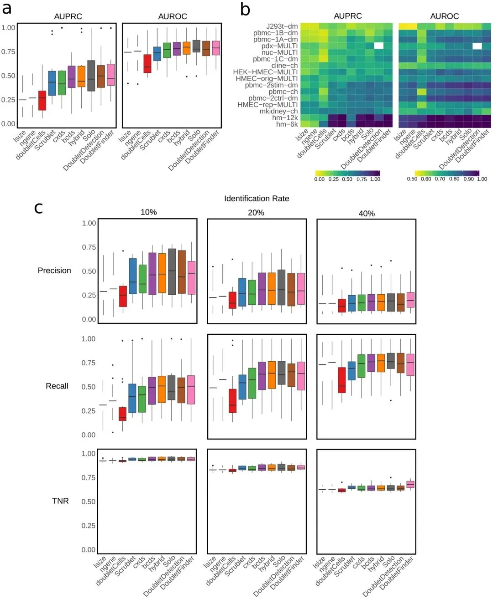
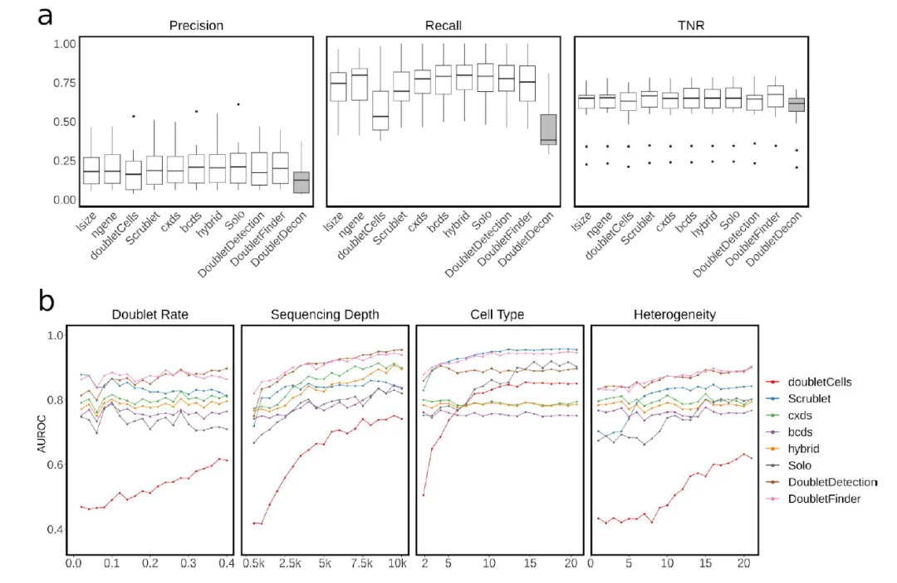
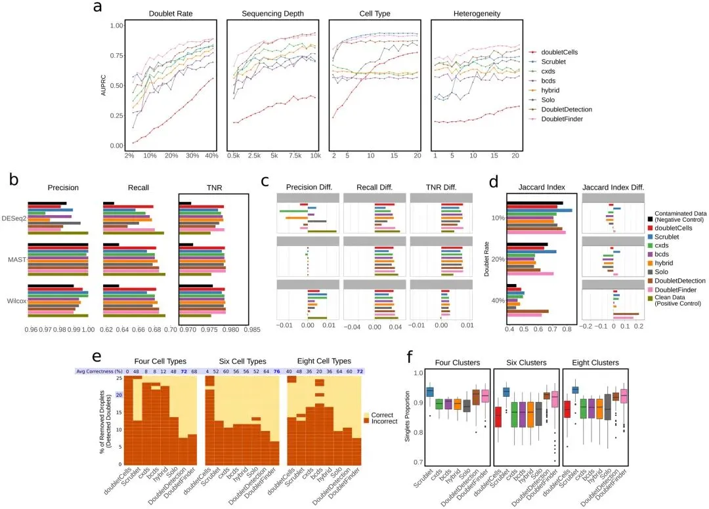
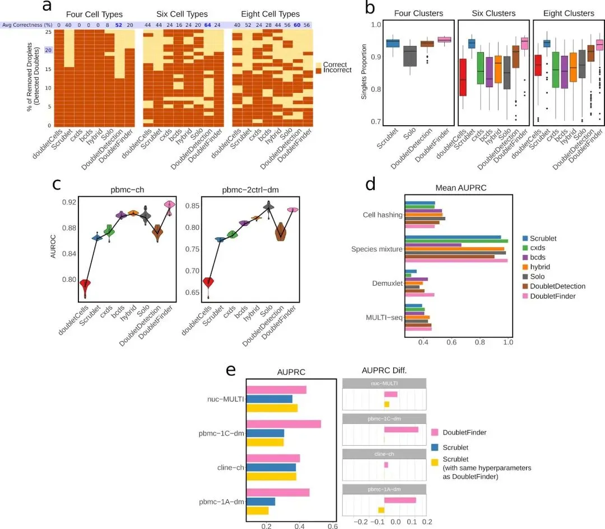
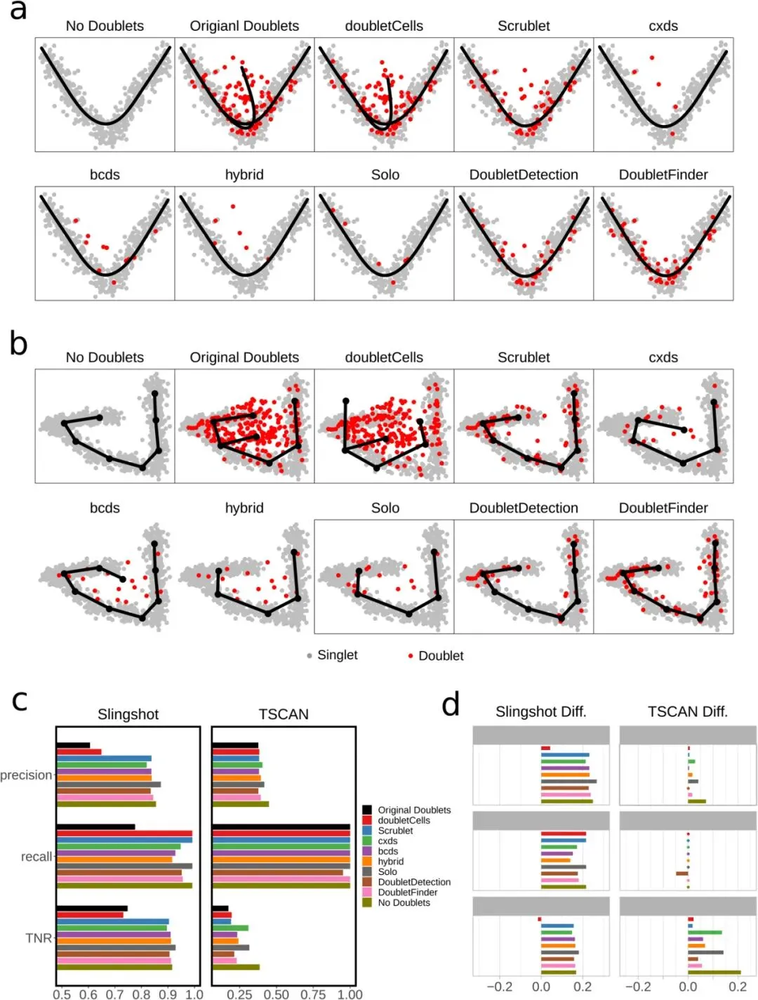
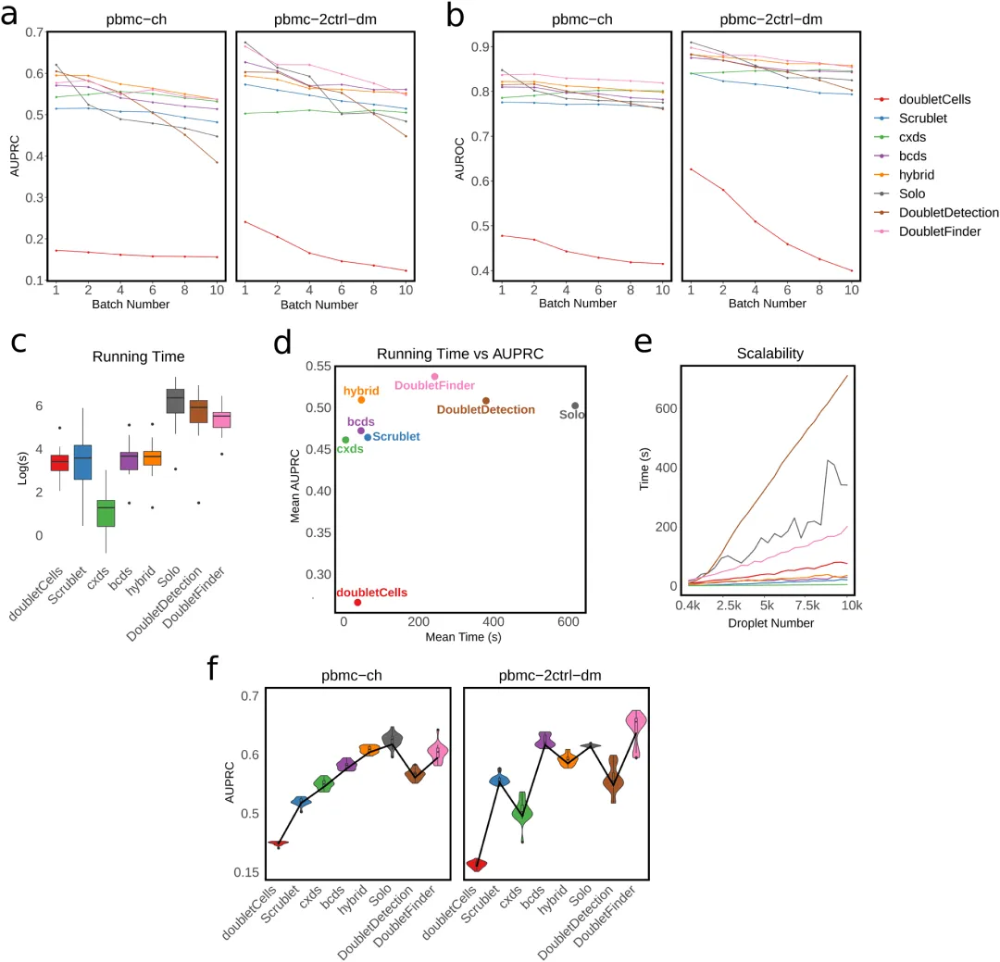
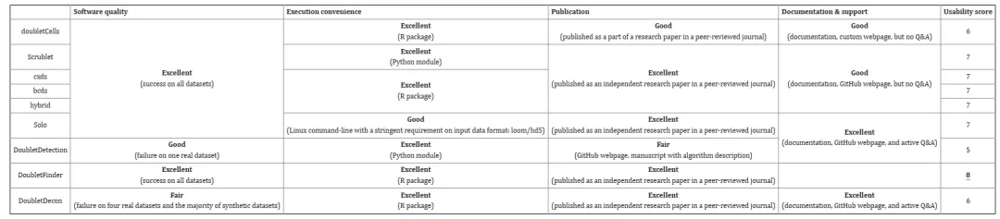
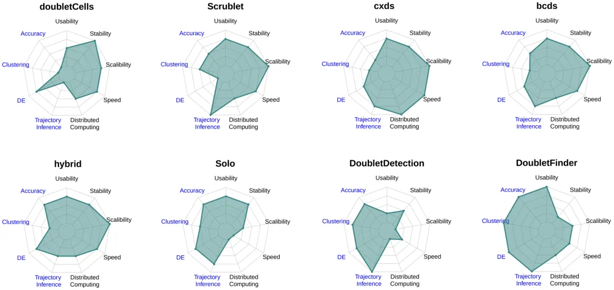

寻找双细胞过滤的八边形战士
原文：https://mp.weixin.qq.com/s?__biz=MzAwMzIzOTk5OQ==&mid=2247528430&idx=1&sn=41e926a281132b86a52056fc3ad275de&chksm=9b3c16beac4b9fa82e9bf2d45954c3000f2713bc5bab6a0ad0719eb5bb6d802886bbf0ed4a66#rd 合集：文献速递
1.1 简介
无论是哪个平台的单细胞测序技术(微流控、微室、微滴等)，在建库过程中都会或多或少的形成一定比例的双细胞(doublets)，即两个或多个细胞混进了一个单细胞建库体系中从而被带上了相同的barcode。这样的情况会导致这种”单细胞”常常会包含多个(homotypic doublets)、甚至多种细胞(heterotypic doublets)混合而成的表达矩阵，从而造成对数据分析的干扰（难怪有些数据分群注释那么难）。为了避免这一现象，反应体系以及实验流程的优化是”湿实验”部分需要解决的问题(例如：cell hashing、species mixture、demuxlet、MULTI-seq等平台或技术)。但是这通常会带来更复杂的实验步骤和更高的实验时间与经济花费，而且实验的优化并不能解决已包含doublets数据的问题。因此在数据分析与处理方面，同样需要优化流程。我们此前的单细胞分析教程中的subset(pbmc, subset = nFeature_RNA > 200 & nFeature_RNA < 2500 & percent.mt < 5)命令就是为了一定程度上过滤掉”空细胞”和”双细胞”。简单的过滤很多时候并不能完成doublets的过滤，目前有诸多计算工具能够帮助用户完成doublets、正常细胞、空液滴的判定。
因此，这里我们分享发表于《Cell Systems》上的双细胞鉴别工具benchmarking文章：
Xi NM, Li JJ. Benchmarking Computational Doublet-Detection Methods for Single-Cell RNA Sequencing Data. Cell Syst. 2021 Feb 17;12(2):176-194.e6.
scRNA-seq双细胞分析教程可见：scRNA-Seq双细胞过滤手册
1.2 doublet计算工具
的benchmark
01
背景介绍
每个doublets的检测工具都能够使用作者提供的测试数据完美的运行，因此需要一个来自第三方的工作对这些工具的计算速度、稳定性、可用性、数据可扩展性进行全方位的评估。这里我们分享的文章于2021年发表于《Cell Systems》上，使用16个真实的数据集以及112个真实数据集的合成数据对包含doubletCells、Scrublet、cxds、bcds、hybrid、Solo、DoubletDetection、DoubletFinder、DoubletDecon在内的共九种双细胞的检测方法进行了评估。
第一步；作者利用area under the precision-recall curve(AUPRC)和area under the receiver operating characteristic curve(AUROC)两个指标在16个真实数据集上评估doublets检测的准确性。接着作者模拟了80个拥有不同双细胞率、测序深度、细胞数、细胞类型异质性程度的数据集，并测试以上九种工具实战的AURPC与AUROC。第二步；作者观察了利用这九种工具去除双细胞前后对定义细胞类型、差异分析、轨迹分析的影响。好的双细胞去除工具会使以上分析步骤变得更加精准。第三步；作者评估了这些工具的计算速度、稳定性、可用性、数据可扩展性。 结果显示，大多数工具都在更高双细胞率、更高测序深度、细胞类型更多、细胞类型间异质性更强的数据集中表现更好，其中准确性最高的为DoubletFinder。并且双细胞的去除能够在差异基因计算、高变基因计算、虚假细胞类型的消除、细胞轨迹推断等方面对分析流程质量进行提升，但各个工具之间的表现差异较大。最终作者认为DoubletFinder拥有最高的准确率而cxds拥有最快的计算效率。
02
各软件在真实scRNA-Seq
数据集中的准确性
作者整理了其认为当时最全的doublets测试数据集。感兴趣的同学可以自行下载练一练下载页面。作者分别以细胞文库大小(library size,lsize)和表达基因的数量(number of expressed genes, ngene)简单过滤为基线对照，计算各个工具的AUROC与AUPRC(DoubletDection无法在pdx-MULTI上工作)。相比于各个工具，在测试结果中可以看出doubletCells明显的拉胯(Figure 1a-b)，优先排除这个错误选项。在AUROC指标中效果甚至还远不如两个基线组。在各个数据集分别的评估中，没有任何一个工具能在所有数据集中均获得较高的评分(Figure 1b)。平均AUPRC最高的是DoubletFinder，平均AUROC最高的是Solo。综合两个指标来看，表现最优的是DoubletFinder。值得一提的是，在所有数据集中两个评分均比基线组高的只有Solo、hybrid（这就是笔者很少用这些软件去除双细胞的原因）。
有一个有趣的现象是hm-12k和hm-6k数据集的预测结果要明显优于剩下的14个数据集。这是因为这两个数据集中包含不止一个物种的数据，即数据内部的高异质性能够带来doublets识别准确率的提升。
由于各工具计算doublets均是通过单一阈值(doublets score)进行判定(DoubletDecon除外)，因此作者使doublets分值处于前10%、20%、40%的细胞被分类为doublets，考察这些情况下准确率、召回率(在所有正类/感兴趣的类别中，模型正确识别出来的正类的比例)、真阴性率(True Negative rates)。 结果显示(Figure 1c)，高的doublets的检出率往往伴随着高的召回率与低的TNR(这好像是废话)。在判定doublets的策略方面，几乎所有的工具都设置了严格的doublets score阈值，以提升判定的准确率。从准确率、召回率、TNR三个角度综合考察，依旧是DoubletFinder和Solo两个工具效果最佳。在这个过程中，另一个错误选项出现了：DoubletsDecon不仅不能输出doublets score，且无法处理hm-12k, pbmc-2ctrl-dm, J293t-dm和nuc-MULTI这四个数据集，更重要的是其在准确率、召回率、TNR三个指标的考察中均垫底(Figure S1a)。

Figure1

FigureS1
03
利用合成scRNA-seq数据检测
doublets在不同实验设置及生
物学条件下的准确率
作者使用scDesign这一scRNA-seq模拟数据生成器获得了各种scRNA-Seq实验产生的模拟数据(这样做的好处是能够快速生成多样(拥有不同的doublets率、测序深度、细胞类型、细胞异质性水平)的测试数据，并且拥有doublets的GroundTruth)。从AUPRC的预测结果来看(Figure 2a)，随着doublets rate的上升，各工具的预测效果总体上升，这个现象不难理解：doublets是一个二分类的问题，两种分类的比例越平衡，模型预测的准确率自然越高。测序深度同样与各工具的预测效果呈正相关关系，对于scRNA-seq这样稀疏性极高的数据而言，测序深度的提升无异于会使数据的分辨率与信息量提升，doublets的判定效果升高也不足为奇。数据中包含的细胞类型数量同样也与doublets的预测效果呈正相关，因为更多的细胞类型会导致异源性双细胞生成的概率上升，这比同源性双细胞的检测要容易得多。另外，细胞类型的异质性上升同样能够带来更佳的doublets检出效果，这是因为截然不同的两种细胞形成的doublets会与原来的singlet具有明显的差别。
AUROC的预测结果也与上面的趋势一致(Figure S1b)。在所有的数据中DoubletFinder的总和表现最强，DoubletDetection和Scrublet次之 。

Figure2
04
doublets鉴定对差异基因计算
的影响
理论上来说，精准的doublets推断能够帮助用户移除尽可能多的双细胞，自然会带来下游差异计算的准确性提高。为了测试这一理论，作者利用scDesign模拟生成了包含1126个差异基因的数据集作为clean data；接着作者利用clean data生成了包含40%doublets噪声的”污染数据”。接着作者利用这些工具移除doublets score最高的40%的细胞生成清洗后的数据。最后利用DESeq2、MAST、Wilcoxon rank-sum test分别在clean data、“污染数据”、以及清洗后的数据中进行差异基因计算(以Bonferroni-corrected p-value小于0.05定义差异基因)，并评估这些计算的准确性、召回率、TNR(Figure 2b)。可以看出所有工具的“清洗”都能够有效地提升DEG的召回率。且无论在什么算法下，, DoubletFinder, doubletCells, bcds,和hybrid的表现均很稳定。令笔者意外的是各个算法之间的效果似乎差别很大DESeq2的稳定性要明显低于另外两种算法。
05
doublets鉴定对高变基因计算
的影响
高变基因(highly variable genes,HVGs)的计算是下游降维、聚类、分群以及轨迹分析的基础，能够对许多基础分析和进阶分析产生重要的影响。而HVGs的计算也最容易受到doublets的影响(其生成会降低数据集的异质性)。这里作者同样利用scDesign生成包含10%、20%、40%的doublets污染数据后使用八种工具去除对应比例doublets score最高的细胞。对各数据集使用Seurat计算HVGs并查看这些数据的HVGs与clean data的交集占比(Jaccard index)。结果显示(Figure 2d), DoubletFinder和Scrublet在各doublets比例中的表现均大于阴性对照组。
06
doublets鉴定对细胞分群
的影响
doublets的移除与细胞的异质性相辅相成，同样这也能够提升细胞分群的效果。不知道大家在日常的分析过程中是否遇到过一些细胞类型，其marker会属于不同的细胞类型，这可能就是doublets污染造成的。为了验证这一现象，作者模拟生成了包含4种、6种、8种细胞类型的数据集，并让这些数据集以20%的比例随机生成双细胞。这些数据集经八种工具移除0~25%的doublets后，通过Louvain聚类算法进行分群。查看doublets形成的”模糊分群”能否在聚类时正确被分离出来，结果(Figure 2e)显示。可以看出doubletCells在数据仅包含4种、6种细胞类型时几乎全军覆没。DoubletDetection和DoubletFinder在细胞类型数量为4、6、8时的分群效果要明显优于其他工具。在实际的分群过程中，同源doublets通常不会像异源doublets那样被正确的分群，而是与同类型的simglets混在同一个cluster中。为了探究同源双细胞对数据分群的影响，作者调整分辨率查看当分群数量等于真实细胞类型数量时，singlets的占比。可以看出在任何细胞类型数量下Scrublet的siglets率均为最高，而DoubletDetection和DoubletFinder的表现也明显优于其他工具。
严谨起见，作者使用DBSCAN聚类算法重复了上面的分析(Figure S2)。虽然DBSCAN的聚类效果整体较Louvain而言更差，但应对doublets的干扰下仍是Scrublet, DoubletDetection, DoubletFinder效果更佳。综合两个算法， DoubletDetection、DoubletFinder适合用于移除异源doublets，Scrublet、DoubletFinder在识别同源doublets中表现更佳。

FigureS2
07
doublets鉴定轨迹分析
的影响
轨迹分析/拟时序分析这类进阶单细胞分析容易受到doublets的干扰，经常会把doublets错误识别为transition状态下的细胞。作者使用Splatter模拟了两个具有分叉轨迹的单细胞数据集并向其中添加了20%的droplets,对clean data和”污染数据”分别进行了Slingshot和minimum spanning tree(MST)算法下的轨迹分析(Figure 2a-b)。可以明显发现，无论在哪种拟时序分析算法中，doubletCells都与”污染数据”一样存在大量doublets的干扰，甚至在轨迹树中生成了不存在的分支。 在多分支的轨迹分析中，Scrublet、DoubletDetection和DoubletFinder的结果与clean data的分支最为类似。
在随着轨迹变化的”时间差异基因”检出方面，各工具对doublets的移除后在Slingshot中的”时间差异基因”计算明显带来准确率、召回率、TNR(Figure 3c)方面的回升。但在TSCAN的拟时序分析中，仅Solo、cxds两个工具相较于”污染数据”而言效果更好。

Figure3
08
doubltes算法的并行表现
现如今，单各细胞数据集的容量已经奔着千万级去了，对这些指数级增长的单细胞数据而言，利用并行计算来大规模并发这些doublets的判定任务显得尤为重要。例如我们常常诟病的单细胞转录因子推断(SCENIC教程)，就因为不能并行计算通常会运行数周。在doublets推断的分布式计算中，软件通常会把大的数据集拆分成小的batch逐个进行doublets的评分，当分布式计算完成后，这些batch会被重新汇集按照统一的阈值进行doublets的判定。但由于每个batch中数据量的局限性和batch之间潜在的不均一性，这种分布式计算通常会造成doublets判定的准确率下降。
为了探究各工具的分布式计算能力，作者使用了真实的大数据集——pbmc-ch和pbmc-2ctrl进行检测。从AUPRC和AUROC两个指标来看，doubletCells拉的比较明显，其在所有批次数量下两指标均断崖式倒一。另外，DoubletDecon并不支持大量数据的计算。虽然DoubletDetection和Solo在批次数较低时表现出色，但是各工具的表现均随着批次数上升而下降，但DoubletFinder的两个指标均比较稳定。
09
计算能力
以上的内容均是从doublets的检测效果上考察各个工具，这一部分作者从计算能力(计算效力、数据可扩展性、稳定性)上对各个工具进行了检验。 首先，作者使用九个工具在16个真实的测试数据集上进行了计算时间的评估。可以明显发现cxds是最快的工具(Figure 4c)，Solo、DoubletDecon、DoubletDetection、DoubletFinder相较于其它工具计算速度明显更大。作者模拟生成了25个不同doublets率的数据，可以明显发现：随着doublets率的提升，DoubletDetection和solo的计算时间也显著上升(Figure 4d)。solo的不稳定可能与其用到的神经网络算法有关。因此，权衡各doublets率下的计算速度，cxds最佳，而DoubletDetection最差。
接着，作者从两个大数据集pbmc-ch和pbmc-2ctrl-dm中拆分出了包含90%的gene以及90%细胞的20个子数据集，并依靠他们对各个工具的计算稳定性进行了考察。在运行这些子集时AUPRC和AUROC变化程度更小的工具即计算稳定性更高。令人意外的是，计算准确率越高的算法往往不稳定性更高(Figure 4f和S2c)。这样看来稳定性的优先级并不是很高，综合稳定性和准确率来看，DoubletFinder、Solo和hybrid是很好的选择。

Figure4
另一方面，作者考察了各个软件的用户友好性、软件质量、维护活性、文献支持等方面。其中DoubletFinder的可用性最高，Solo、DoubletDetection、DoubletFinder和DoubletDecon拥有较好的的社区支持性。

Table2
1.3 小结
随着单细胞数据量、分析类型、分析工具的逐渐增加，单细胞数据分析的流程逐渐变得复杂且个性化，所以各种分析方法的benchmarking变得十分重要。在doublets的判定上，作者认为目前还存在五个难点： (1)如何鉴定doublets率未知的数据集？
大多数情况下doublets率以及doubltes score均是未知的，很多软件会使用一个内置的阈值让计算出的doublets率尽量在其附近波动。仍需要更科学的方法来替代这一策略。 (2)同源性doublets检出能力不足 (3)如何区别doublets和被环境RNA污染的细胞？
建库过程中环境里的其它细胞裂解也会可能造成其它droplets的污染，这些被污染的doublets是否会被上述的工具检出？这也是一个需要解决的问题。 (4)缺少真正高质量的测试与验证数据
由于没有真正能够产生纯净singlet或doublet的数据。而作者认为混合数据生成的doublets并不能够与实际情况获得的数据完全一致。也就是说，评估这些算法的验证数的可靠性，甚至都需要打一个问号。 (5)如何联合多种doublets算法?
从上面的内容大家不难发现，每个算法工具均有自己的优势和软肋，没有完全的“多边形选手”。因此，联合多种doublets检出算法对数据进行“会诊”，也许是一个不错的方案，但是目前没有工具能够做到这点。
最后、作者整理出了各个算法的能力雷达图(Figure 5)。可以看出，在雷达图左半边的计算准确率和对下游分析的贡献、可用性而言，DoubletFinder一骑绝尘；而在雷达图右半边的计算数据扩展能力、计算速度、分布式计算能力而言cxds占有绝对优势，因此我们后续两章的实战也会用这两个工具演示。对其它工具感兴趣的同学可以自行去试一试：
doubletCells Scrublet cxds,bcds, hybrid DoubletDetection DoubletDecon Solo

Figure5

如何联系我们

 留一个领取资料、免费两周学习版服务器的微信号[Biomamba_yunying]，方便各位随时交流。同时我们也构建了交流群矩阵，欢迎大家入群讨论。
留一个领取资料、免费两周学习版服务器的微信号[Biomamba_yunying]，方便各位随时交流。同时我们也构建了交流群矩阵，欢迎大家入群讨论。
大家可以阅读完这几篇之后添加给生信入门初学者的小贴士 如何搜索公众号过往发布内容
已有生信基地联系方式的同学无需重复添加

 您点的每个赞和在看，我都认真当成了喜欢
您点的每个赞和在看，我都认真当成了喜欢